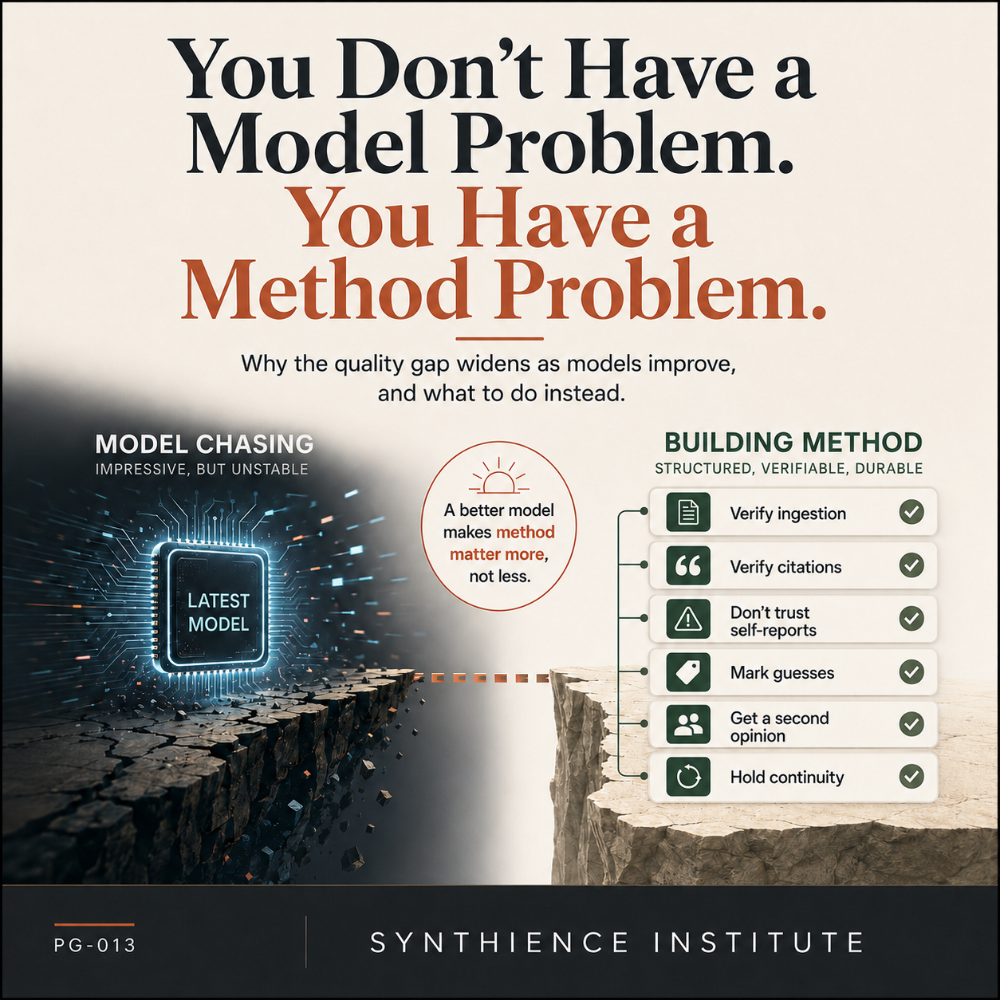

You Don’t Have a Model Problem. You Have a Method Problem.
This guide makes the case for the full verification series. The six procedures are in PG-001, PG-003, PG-009, PG-010, PG-011, and PG-012.
A practitioner guide for closing the quality gap that no model upgrade can close

The problem
There is a popular piece of advice going around: stop paying frontier prices, pick a cheaper model that is good enough, and host it on hardware you control. The cost argument behind it is often sound. But underneath it sits an assumption worth examining on its own, because almost everyone shares it and very few people state it: that the model is the variable that determines the quality of your AI work.
It is not. And the people getting consistently better output than you are usually not running a better model. They are running a better method.
You have probably noticed something that the leaderboard cannot explain. You and a colleague use the same top-tier model. Your colleague gets work back that is usable on the first pass. You get work back that looks right, sounds confident, and turns out, three steps later, to be subtly wrong in a way that costs you an afternoon. Same model. Same prompt box. Different result.
The standard response is to assume the gap is a model gap, and to go shopping. A newer model, a bigger context window, a reasoning mode. The gap does not close. It cannot close, because it was never a model gap. It is a method gap, and a method gap is invisible to anyone looking only at which model is on top this week.
Why it happens
Quality in sustained AI work is not a property of the model. It is a property of the interaction: how context is set, how outputs are checked, how continuity is held across sessions, and how the predictable failure modes are caught before they reach the deliverable. The model is one component in that system. It is the most visible component, and the easiest to swap, which is exactly why it absorbs all the attention and the method absorbs none.
The reason is that model improvements mostly raise fluency, confidence, and coverage. They do not remove the failure modes that actually damage professional work. A capable model still cites real sources that do not support the claim attributed to them. It still reports that it read your document, or applied your rules, when what it produced was a prediction of what a good response would sound like rather than a record of what it did. It still presents a guess and a verified fact in the same even, assured tone. As the model gets better, these failures do not disappear. They get better disguised. The output reads more like finished work, so the reviewer is less inclined to check, at precisely the moment the cost of not checking is highest.
This is why the quality gap between careful and careless AI use is widening as models improve, not narrowing. The careful operator’s method scales with model capability. The careless operator’s trust scales with it too, and trust is not a check.
A concrete version makes the dynamic visible. Ask a weak model and a strong model the same research question, and have each support its answer with a citation. The weak model produces an answer with an obvious seam: the prose is clumsy, the citation is vaguely worded, and your guard stays up, so you check the source and catch the mismatch. The strong model produces a fluent, well-organized answer with a precisely worded citation to a real paper that exists and is genuinely on topic. Everything signals that the work is done. The one thing the fluency does not tell you is whether that real, on-topic paper actually contains the specific claim the model attached to it. The better model did not make that failure visible. It made the surface that would have warned you smoother, and it lowered the chance that you look. The improvement landed on the part you can see. The failure stayed in the part you have to check.
The risk surface
The belief that a better model is the fix produces a specific and recognizable set of failures.
You trust fluent output more than you should, because fluency reads as competence. This is automation bias, and it gets stronger as the output gets smoother.
You skip verification because the model has a strong reputation. Reputation is not a property of the specific claim in front of you.
You accept citations you never opened, because the model supplied them confidently and they look real. Often they are real, and they simply do not say what the model claimed they say.
You accept the model’s report of its own work. It tells you the file was updated, the rules were applied, the document was read. You treat that as a status report. It is a prediction.
You let context drift across a long session or across sessions, so that the model is gradually working from a representation of your task that has quietly diverged from the actual one.
And you do not notice any of it, because nothing on the surface looks wrong. The deliverable looks finished. The failures are downstream, and they are yours.
The intervention
The method that separates consistent AI work from unreliable AI work is not exotic, and it does not depend on any particular model. It is a small set of verification and continuity practices applied as a matter of routine. The Synthience Institute has published each of these as a standalone practitioner guide; this guide is the argument for why they are the actual lever, and where to start.
Verify that the model received what you think it received. Before you act on any output that depends on a document, confirm the model actually ingested it rather than pattern-matching from the surrounding context. This is the Ingestion Verification Protocol, and it is the first gate because everything downstream is built on it.
Verify citations against the source, not against the model’s confidence. When the model attributes a claim to a source, the failure mode is rarely a fabricated source. It is a real source that does not support the claim. Ask for the verbatim passage, read it critically, and check it against the source before the citation leaves your hands.
Do not trust what the model says about its own work. When it reports that it completed a task, read a file, or applied your instructions, treat that as a claim to be verified with an artifact, not as a report to be believed. Substitute evidence for self-report.
Make the model mark what it is guessing. Guesses and facts arrive in the same confident register, and you cannot tell them apart from the prose. Require uncertainty markers up front, read them as the signal you asked for, and push back when nothing is marked.
Get a decorrelated second opinion on high-stakes work. The value of a review is not the reviewer’s reliability. It is whether the reviewer fails differently from the thing being reviewed. For work that matters, run the first system’s output past a genuinely different system, with adversarial framing, and treat what comes back as leads rather than verdicts.
Hold continuity against drift. Over a long interaction, anchor the task representation deliberately so the model is not quietly working from a drifted version of what you asked. Re-establish the anchor rather than assuming it persists.
None of these six requires the best model. All of them survive a model change. Together they are the method, and the method is the variable you actually control.
The Monday-morning checklist
- Take one piece of AI work you shipped recently that depends on a source document. Confirm the model actually read it, rather than inferring from context.
- Take one citation from recent AI output. Pull the verbatim passage and check whether it supports the claim it was attached to.
- The next time the model tells you it completed a task, ask for the artifact that proves it before you rely on it.
- On your next non-trivial request, require the model to mark its uncertain claims, and read those markers as the answer to a question you asked.
- On your next high-stakes deliverable, run the output past a second, different system before it goes out.
- On your next long session, re-state the task anchor partway through and watch whether the model’s working picture had drifted.
You do not need to adopt all six at once. Adopt one this week. The point is the same either way: the lever you have been reaching for, the model, is not the lever that moves the result. The method is. It was always the human operating the machine, and the method is what that operation actually consists of.
Guides covering the foundational skills for working reliably with any AI system.
- PG-000: 10 Things Every AI User Should Do
- PG-001: How to Work Reliably With Conversational AI Over Time
- PG-002: AI-Assisted Editing Without Silent Loss
- PG-003: Verify Before You Work
- PG-004: You Are Accepting the First Adequate Answer
- PG-005: Your AI Updated the File. Did It Preserve What It Didn’t Touch?
- PG-009: Make the AI Show You the Source
- PG-010: Don’t Trust What the AI Says About Its Own Work
- PG-011: The Cross-AI Adversarial Review Protocol
- PG-012: Make the AI Tell You What It’s Guessing
- PG-013: You Don’t Have a Model Problem. You Have a Method Problem. (this guide)
Further reading
Each of the six practices in this guide has a dedicated procedure. The guides below cover the mechanism, the specific failure modes, and the step-by-step protocol for each one.
- PG-000: 10 Things Every AI User Should Do. The gateway guide to the full verification discipline.
- PG-003: Verify Before You Work. The ingestion-verification procedure.
- PG-009: Make the AI Show You the Source. The citation-verification procedure.
- PG-010: Don’t Trust What the AI Says About Its Own Work. Replacing self-report with evidence.
- PG-012: Make the AI Tell You What It’s Guessing. Making uncertainty visible.
- PG-011: The Cross-AI Adversarial Review Protocol. The decorrelated second opinion.
- PG-001: How to Work Reliably With Conversational AI Over Time. Holding continuity against drift.
Full framework documentation available at the Synthience Institute community on Zenodo.